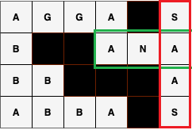
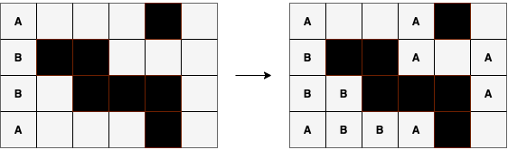
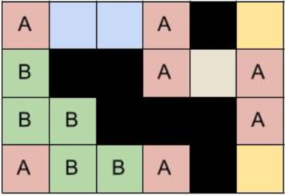

一些来源未知的题目
条评论【货币】Money
时间限制 100 ms 内存限制 500000 KiB
题目描述
千百年来, “乌有之乡”一直流通着 $D$ 种不同面额的硬币。
新任”乡长”刚上任, 就颁发法规要求任何一次购买中不得使用超过 $C$ 个同一面额的硬币（无其它限制）。
例如，如果 $C = 2$，且现有的面额为 $1$ 和 $5$,
则可以使用两个 $5$ 和一个 $1$ 购买价值为 $11$ 的物品，
也可以使用两个 $5$ 和两个 $1$ 购买价值为 $12$ 的物品,
但无法购买价值为 $9$ 或 $17$ 的物品。
作为”乌有之乡”的铸币局局长, 你不想违抗新任”乡长”的命令, 所以你希望通过发行新面额硬币, 使得可以合法购买任何价值不超过 $V$ 的物品。
请问, 最少需要引入几种新面额?
输入格式
输入两行:
- 第一行包含三个整数, 分别为 $C$、$D$、$V$, 以空格隔开
- 第二行包含 $D$ 个整数, 表示 $D$ 种已有面额, 按升序排列, 以空格隔开
输出格式
输出一行, 包含一个整数, 表示最少需要引入的新面额的种数。
脚注
测试数据说明
共 100 个测试用例。
单个测试用例最长时限为 C++:100ms/Java:500ms，内存限制为 500000 KiB。
一次提交最长测试时间（不计可能的排队等待时间）为 C++:10s/Java:50s。
$1 \le C \le 100$
- 15 个测试用例满足 $C = 1$
- 40 个测试用例满足 $C < 10$
$1 \le D \le 100$
- 50 个测试用例满足 $D < 10$
$1 \le V \le 10^9$（注意数据范围，选择合适大小的数据类型）
- 15 个测试用例满足 $V \le 100$
- 35 个测试用例满足 $V \le 10^8$
- 约 60 个测试用例满足 $V \le 5 \times 10^8$
- 约 80 个测试用例满足 $V \le 8 \times 10^8$
- 3 个测试用例满足 $V = 10^9$
解题说明（仅供参考，免责声明）
- 维护当前无法合法购买的物品的最小价值
- 假设已知当前无法合法购买的物品的最小价值为 $U$，怎么办呢，局长大人？

样例
#1
1 | 1 3 6 |
1 | 1 |
#2
1 | 1 6 100 |
1 | 3 |
【农场】Farm
时间限制 2000 ms 内存限制 500000 KiB
题目描述
身为“乌有之乡”铸币局局长，你拥有一片二维平面整数网格状农场，很合理的吧？
你在农场的不同位置养了 $N$ 头牛。为了便于管理, 你计划用矩形围栏 (围栏边平行于 $x$ 轴与 $y$ 轴) 将所有的牛圈起来。注意, 允许牛在围栏的边界或顶点上。
由于经费限制, 你希望围栏围住的面积尽可能小。为此, 你决定建造两个围栏将所有的牛圈起来。
请计算, 与仅建造一个围栏相比, 建造两个围栏最多可以减少多少围栏面积?
注意:
- 两个围栏不允许重叠，边界、顶点处也不可以。
- 允许建造宽度和/或长度为零的围栏, 它们的面积为零。
举例
$ 5 $ 头牛分布在 $A:(2,5)$、$B: (2,3)$、$C: (3,4)$、$D: (6,5)$、$E: (7,3)$ 处。

如果建造一个围栏，最小面积为 $10$。

如果建造两个围栏，最小面积为 $ 4 $，最多减少面积为 $ 6 $。(这是垂直划分方案达到最优的一个例子)

输入格式
输入 $𝑁+1$ 行:
- 第一行是一个整数, 表示牛的数量 $𝑁$
- 接下来 $𝑁$ 行, 每行包含两个整数 (表示每头牛所处位置的 $𝑥$ 坐标和 $𝑦$ 坐标), 以空格隔开
输出格式
输出一个整数, 表示最多可以减少的面积。
脚注
测试数据说明
共 $ 10 $ 个测试用例。
单个测试用例最长时限为 C++:2000ms/Java:10000ms，内存限制为 500000 KiB。
一次提交最长测试时间（不计可能的排队等待时间）为 C++:20s/Java:100s。
测试用例规模:
- 牛的位置，即 $x$ 和 $y$ 轴坐标是 $ 1$ 至 $ 1,000,000,000 $ 范围内的正整数（注意选择合适大小的类型）。
- $ 3 \le N \le 50,000 $
- $ 6 $ 个测试用例满足 $ 3 \le N \le 4,000 $
- $ 4 $ 个测试用例满足 $ 10,000 \le N \le 50,000$
解题说明（仅供参考，免责声明）
- 需要考虑 水平切分（从哪个位置划分）与 垂直切分 （从哪个位置切分）两种情况。
- 为了减少冗余代码，必要的时候可以对农场进行“转置”处理。
样例
#1
1 | 5 |
1 | 6 |
【赛牛】Race
时间限制 1000 ms 内存限制 512000 KiB
题目描述
看, 你的农场里的 $N$ 头牛正准备赛跑。
它们的体型完全一致, 可以看作 1 个单位长度的水平线段。
因此, 在 $t = 0$ 时刻, 可以仅用左端点坐标表示每头牛所处的起跑位置。
例如，$(-3,6)$ 表示处在 $(-3, 6)$ 到 $(-2, 6)$ 位置的某头牛。
每头牛都向右（$+x$ 方向）以某个速度匀速奔跑。
某头牛的速度为 $r$ 则表示它每 $r$ 个单位时间前进 1 个单位距离。
你站在 $(0, 0)$ 处, 并沿着 $+y$ 方向的射线观察比赛。注意, 你的视野非常受限, 仅仅是一条无宽度的理想射线。因此, 在任何时刻, 你最多仅能观察到一头牛（此时该牛的 $x$ 坐标范围为 $[-1, 0]$）, 而其它的牛可能被挡住了，或者尚未进入到达 $[-1,0]$ 区域，或者已离开 $[-1, 0]$ 区域。
注意：为了简化问题，如果某头牛的 $x$ 坐标范围为 $[0, 1]$，即使它没被挡住，我们也看不到（你无法从尾巴末梢推断出这是不是一头牛）。
请计算, 在整个比赛期间, 你可以看到多少头牛?
注意: 为了进一步简化问题, 假设时间与牛群的动作都是离散的。也就是说，对于速度为 $r$ 的牛，它每隔 $r$ 个单位时间瞬移一个单位距离（而不是每一个单位时间里移动 $1/r$ 距离）。
输入格式
输入 $N + 1$ 行:
- 第一行是一个整数, 表示牛的数量 $N$
- 接下来 $N$ 行, 第 $i$ 行表示第 $i$ 头牛的信息, 包含三个整数, 以空格隔开:
- $x_{i}$: $t = 0$ 时刻, 第 $i$ 头牛所在左端点的 $x$ 坐标（$x_{i} \le -1$）;
- $y_{i}$: $t = 0$ 时刻, 第 $i$ 头牛所在左端点的 $y$ 坐标;
- 保证所有 $y_{i}$ 不同, 所以不会发生”撞牛”事故;
- $r_{i}$: 第 $i$ 头牛的速度。
输出格式
输出一行:
- 一个整数, 表示可以看到的牛的数目
脚注
测试数据说明
共 $25$ 个测试用例。
单个测试用例最长时限为 C++:1000ms/Java:5000ms，内存限制为 512000 KiB。
一次提交最长测试时间（不计可能的排队等待时间）为 C++:25s/Java:125s。
测试用例规模:
- 对于所有测试用例
- $1 \le N \le 50,000$
- $-1000 \le x_i \le -1$
- $1 \le y_{i} \le 1,000,000$
- $1 \le r_{i} \le 1,000,000$
- 其中有 $9$ 个测试用例输入满足 $500 \le N \le 50,000$
- 对于所有测试用例
解题说明（仅供参考，免责声明）
测试样例 1 图解
有三头牛 $n_1=(-2,1,3), n_2=(-3,2,3), n_3=(-5,100,1)$。
- $t=0$ 时，牛 $n_1,n_2,n_3$ 的 $x$ 坐标范围分别是 $ [-2,-1],[-3,-2],[-5,-4]$ 。
- $t=3$ 时，牛 $n_1,n_2,n_3$ 分别向 $+x$ 方向瞬移 $ 1,1,3 $ 个单位，其当前 $x$ 坐标范围为 $ [-1,0],[-2,-1],[-2,-1]$ ，此时牛 $n_1$ 在视线内，牛$n_1$可见。
- $t=4$ 时，牛 $n_1,n_2$ 保持不变，$n_3$ 再度瞬移 $1$ 个单位，其当前 $x$ 坐标范围为 $ [-1,0] $ ，但由于牛 $n_1$ 阻挡了视线，此时牛$n_3$不可见。
- $t=6$ 时，牛 $n_1,n_2,n_3$ 再度向 $+x$ 方向瞬移 $ 1,1,2 $ 个单位，其当前 $x$ 坐标范围为 $[0,1],[-1,0],[1,2]$ ，此时牛 $n_1,n_3$ 已经越过视线，而牛 $n_2$ 在视线内，牛$n_2$可见。

一种高效方法的神秘提示
$(x, y, r)$ : $x \gets xr$ 或 $x \gets x(-r)$
样例
#1
1 | 3 |
1 | 2 |
#2
1 | 4 |
1 | 3 |
#3
1 | 3 |
1 | 3 |
【回文】Crossword
时间限制 600 ms 内存限制 300000 KiB
题目描述
在繁忙的铸币局工作与农场管理事务之余，你喜欢玩填字游戏。
回文填字游戏是指每个单词都是回文的填字游戏。
在下图已完成的 $4 \times 6$ 大小的回文填字游戏示例中,
(高亮显示的) 单词 $ANA$ 与 $SAAS$（我们不关心单词的含义，单词仅是一个字符串）均是回文。
注意, 黑色单元格表示分隔符, 且不可以填入字符。

你购买了一个大小为 $N \times M$ 的已完成的回文填字游戏。但不幸的是, 有些字符丢失了。
如左下图所示, 丢失的字符表示为空格。

请问, 仅利用回文的特点, 最多可以恢复多少个缺失的字符?
右上图展示了恢复尽可能多字符后的结果, 共填入 $8$ 个字符。
输入格式
输入 $N + 1$ 行:
- 第一行包括两个整数, 以空格隔开:
- 第一个整数表示行数 $N$
- 第二个整数表示列数 $M$
- 接下来 $N$ 行, 每行是一个长度为 $M$ 的字符串, 共三种字符:
- $A$ 到 $Z$ 大写字母
- $\cdot$: 表示空白单元格
- #: 表示分隔符
输出格式
输出 $N + 1$ 行:
- 第一行是一个整数, 表示最多可以恢复的字符数
- 接下来 $N$ 行是恢复后的回文填字游戏 (其中某些 $\cdot$ 被替换成了字母)
脚注
测试数据说明
共 20 个测试用例。
单个测试用例最长时限为 C++:600ms/Java:3000ms，内存限制为 300000KiB。
一次提交最长测试时间（不计可能的排队等待时间）为 C++:12s/Java:60s。
测试用例规模:
- 对于所有测试用例, $1 \le M, N \le 1000$
- 其中有 3 个测试用例输入中不含 $\cdot$
- 其中有 4 个测试用例输入中不含 #
- 其中有 2 个测试用例输入中既不含 $\cdot$，也不含 #
- 其中有 10 个测试用例输入满足 $1 \le M, N \le 50$
解题说明（仅供参考，免责声明）
基本解法
- 逐行处理。
- 逐列处理。
- 迭代。
可能的高效解法要点提示
- 使用图论建模，如何建边？下图对应测试样例 2。
- 如何安排填充顺序？

样例
#1
1 | 2 2 |
1 | 2 |
#2
1 | 4 6 |
1 | 8 |